Comiat al Picasso amb fotos de públics
Thu, 09 Feb 2012 15:20:11 +0000
Després de més de cinc anys al Museu Picasso, treballant en molts projectes, però especialment en temes web i xarxes socials, se’m fa estrany escriure un darrer post. I he pensat que una bona manera d’acomiadar-me era publicant una selecció de fotos que he anat fent al públic d’obres de Picasso a museus d’arreu. Als [...]
Després de més de cinc anys al Museu Picasso, treballant en molts projectes, però especialment en temes web i xarxes socials, se’m fa estrany escriure un darrer post. I he pensat que una bona manera d’acomiadar-me era publicant una selecció de fotos que he anat fent al públic d’obres de Picasso a museus d’arreu. Als museus, a més de les obres i de la museografia resulta molt interessant observar el públic. Ja fa temps vaig començar una sèrie d’àlbums a Flickr sobre el públic dels museus. Visitants mirant, fotografiant, conversant, ensenyant, gaudint, interactuant, llegint, explorant, copiant, escoltant, compartint i més ens mostren les múltiples cares de l’experiència als museus. Una experiència de visita que hem encara d’esforçar-nos més per aconseguir que sigui d’una major qualitat i diversitat.

")
")
Atlanta Museum of Art

_p")
Centre Pompidou


Museu Picasso de Barcelona


Courtauld, Londres i Broklyn Museum, Nova York


MoMA, Nova York
_p")

Philadelphia Museum of Art
_p")

Tate Modern
Doncs arribem al torn d’agraïments: als companys i companyes del Picasso perquè tot el que hem fet ha estat una tasca d’equip (sí, en 5 anys hem, fet feina de 10!!) , al director, Pepe Serra, per la confiança aquesta etapa del Picasso com ara en la nova etapa al Mnac, als companys d’altres museus de Barcelona, Catalunya i el món i, sobretot, a vosaltres lectors del blog, seguidors a twitter, amics a facebook, usuaris de la web perquè ens heu donat el sentit d’anar més enllà cada dia. Gràcies a tot@s i… ens veiem al Mnac!!
Conxa Rodà
Comiat de Pepe Serra: balanç d’una etapa
Tue, 31 Jan 2012 10:51:38 +0000
Quan el nostre director Pepe Serra es va acomiadar de l’equip del museu ens va dir: “Hem fet en 5 anys la feina de 10″. I aquí un petit recull dels projectes que s’han dut a terme durant els seus anys de direcció.
· Investigació i desenvolupament d’exposicions que aporten coneixement i valor afegit
Devorar París “Picasso [...]
Quan el nostre director Pepe Serra es va acomiadar de l’equip del museu ens va dir: “Hem fet en 5 anys la feina de 10″. I aquí un petit recull dels projectes que s’han dut a terme durant els seus anys de direcció.
· Investigació i desenvolupament d’exposicions que aporten coneixement i valor afegit
Devorar París “Picasso 1900-1907” (2011). Autoretrat amb paleta. Picasso. París, 1906 | Picasso davant Degas (2010)


Oblidant Velázquez. Las Meninas (2008). Foto: Lafotogràfica | Lee Miller. Picasso en privat (2007)
· Entrada de la creació contemporània al museu


Rodney Graham. Possible Abstractions (2010) | Cicle de performances
· Nova instal·lació de la sèrie Las Meninas presentades de forma cronològica


· Donació d’un esbós de Las Meninas per part de Catherine Hutin filla de Jacqueline Picasso, al museu
 |
Pablo Picasso Esbós per a Las Meninas Canes, 16 d’agost de1957 Llapis de color sobre paper 24 x 30,5 cm Donatiu Catherine Hutin MPB 113.292
|
· Increment de préstecs internacionals per tal d’estar present en els projectes expositius de major importància relacionats amb Picasso arreu del món:


Preparatius pel viatge de l’Arlequí i Las Meninas. Col·locació de l’obra a la caixa de transport
- L’Arlequí ha viatjat a Roma per a l’exposició “Picasso 1917-1937: l’Arlecchino dell’Arte” (2008-2009) i a Los Angeles County Museum of Art (2010-2011).
- Set quadres de la sèrie Las Meninas, la Nana, un autoretrat i els retrats de Sabartés i Casagemas han estat prestats a les Galeries nationales du Grand Palais de París per a l’exposició “Picasso et les Maîtres” Las Meninas també han anat a la National Gallery de Londres (2008-2009).
- L’espera (Margot) ha estat prestada a The Metropolitan Museum of Art de Nova York, al The Art Institute of Chicago i al Musée d’Orsay de París (2006-2007).
· Renovació de la web i desenvolupament de l’estratègia i les accions de comunicació 2.0 i les xarxes socials, que van obtenir el premi Best of the Web als EUA, 2010

· Preparació de la col·lecció online i bolcatge a la web

· Millores en la gestió de públics amb la inclusió de la venda d’entrades online, la definició de franges horàries per grups i la posada en marxa del Carnet del Museu Picasso


· Edició d’una nova audioguia multimèdia en vuit idiomes
· Rrestauració dels sostres del Palau Aguilar amb el descobriment de policromies medievals i realització d’un estudi radiogràfic de la col·lecció


Restauració del sostre del Palau Aguilar | Aplicació de la pistola de fluorescència de raigs X al Cap de dona (Fernande Olivier)
· Creació del nou Centre de Coneixement i Recerca en un edifici de nova construcció a la plaça Sabartés

Interior del Centre de Coneixement i Recerca durant unes jornades. Foto: Conxa Rodà
· Creació del Servei Educatiu i treball del museu per esdevenir un recurs educatiu per a tots els nivells


Projectes de barri | Visita dinamitzada sobre Las Meninas a primària
· Increment de la programació d’activitats entorn de la col·lecció i de les exposicions temporals. Desenvolupament de projectes en col·laboració amb altres entitats i aproximació al barri


Parlem de pintura amb Frederic Amat. Foto: Jordi Mota | Taller de xilografia i gravat japonès. Foto: Jordi Mota | Big Draw. La Festa del Dibuix. Foto: Bárbara Piffre
· Posada en marxa i impartició del postgrau en Gestió Museística: “Com es fa funcionar un museu” amb col·laboració amb l’Institut d’Educació Contínua (IDEC) de la Universitat Pompeu Fabra (UPF)

· Llançament d’una nova línia editorial amb les col·leccions Abstract i Focus


L’Abstract és un fullet que acompanya algunes exposicions temporals del museu. Inclou un resum dels àmbits, una selecció de les peces més importants i algunes cites procedents del catàleg. La col·lecció Focus està formada per una sèrie d’opuscles que acompanyen les exposicions de petit i mig format, l’objectiu de les quals és aprofundir en l’anàlisi d’obres concretes de les col·leccions del museu.
· Creació d’una Xarxa Picassiana en col·laboració amb d’altres institucions que gestionen espais dedicats a l’artista entre les que destaquem l’ajuntament Gósol, el centre Picasso d’Horta de Sant Joan, el Museu de Cadaqués i la Fundació Palau de Caldes d’Estrac.
I també tenim projectes en procés molt avançat!
· Procés cap a creació d’una Fundació Museu Picasso Barcelona
· Nova ordenació i presentació de la col·lecció permanent
· Edició d’una nova guia en paper del museu
· Producció d’un audiovisual de 50 min. Picasso i Barcelona
Potser sí que hem fet en 5 anys feina de 10. Què en penseu?
Redacció del Museu
Les peces d’un trencaclosques
Thu, 19 Jan 2012 13:33:53 +0000
De sempre m’han agradat els llibres amb imatges. Quan era petita passava força tardes asseguda al sofà fullejant algun dels pocs llibres amb fotografies que hi havia a casa. Anys més tard, vaig treballar fent d’editora d’una col·lecció de llibres d’història —també il·lustrats— i el meu cap d’aleshores ens deia que calia que les combinacions [...]
De sempre m’han agradat els llibres amb imatges. Quan era petita passava força tardes asseguda al sofà fullejant algun dels pocs llibres amb fotografies que hi havia a casa. Anys més tard, vaig treballar fent d’editora d’una col·lecció de llibres d’història —també il·lustrats— i el meu cap d’aleshores ens deia que calia que les combinacions d’imatges parlessin per elles mateixes.


Versións provisional i definitiva d’una de les pàgines del núm. 2 de la col·lecció Focus “Picasso 1936. Empremptes d’una exposició”
Encara ara m’encanto passant fulls i tractant de trobar un fil a qualsevol llibre amb fotografies que tingui entre les mans. Potser per això segueixo entestant-me també a creure que cada edició nova que fem al museu ha de poder ser vista com una mena de narració.
Assolir aquest objectiu no sempre és fàcil. Quan fem els catàlegs d’exposicions de gran format sabem que estem construint una peça única; els encerts i els errors de cadascuna ens ajuden a millorar la següent. Però quan es tracta d’una col·lecció de llibres el repte és més gran, perquè les pautes de la maqueta base no es poden canviar. I aquest és el cas de la col·lecció Focus, que va ser pensada per deixar testimoni de les exposicions de petit format que el museu es proposava fer al voltant de peces dels seus fons.
Portada del núm. 2 de la col·lecció Focus
La feina de disseny la vam encarregar a Edicions de l’Eixample, que va crear una maqueta magnífica que respon perfectament a les característiques del projecte. Les dimensions, el paper, les caixes de text, la tipografia, l’estructura interna de dues parts ben diferenciades (text i imatges) i la sobrecoberta il·lustrada considerem que són un encert.

Esbós a mà d’una de les pàgines de la publicació
El primer número, “Ciència i Caritat al descobert”, ens va permetre fixar moltes de les pautes gràfiques de la col·lecció, perquè malgrat que l’estructura estava ben definida, cada idea nova que sorgia mentre anàvem fent la maqueta ens plantejava reptes i preguntes.
El segon número, “Picasso 1936. Empremtes d’una exposició”, ha estat especialment complicat. A més a més de treballar amb un material gràfic molt diferent, hem hagut d’encabir en un suport estàtic una història en la qual intervenien múltiples elements dinàmics. La tecnologia emprada a l’exposició, pura interconectivitat, ha presentat al públic d’una forma molt més exhaustiva totes aquestes peces, però nosaltres, “atrapats” en el paper, hem hagut de rumiar molt el contingut de cada doble pàgina per ser capaços d’aconseguir un resultat equiparable.


Versións provisional i definitiva de les pàgines del núm. 2 de la col·lecció Focus
Si muntar una maqueta és sempre com jugar amb un trencaclosques del qual ningú et dóna la imatge final a aconseguir, en aquest cas, construir-la ha estat, més que mai, enrevessat. Els dissenyadors han hagut de fer atractiu visualment allò que d’entrada no ho semblava (retalls de fulls de premsa, fragments de documents…) i construir una seqüència entenedora. Ells han assajat ordres d’imatges alternatius, han combinat els blancs, han encabit els peus de fotografies i han tractat d’establir un ritme atractiu. Volíem que el lector pacient fos capaç d’anar passant cada pàgina i sentir el desig de llegir els documents que li hem presentat i, poc a poc, pogués anar veient com es va arribar a muntar l’exposició del 1936.
Hauria estat més fàcil fer un llibre digital enriquit? Realment hem pogut explicar als lectors els lligams entre els diferents actors i elements conceptuals que expliquen l’exposició de Picasso del 1936? Són preguntes que jo personalment em continuo fent.


Versións provisional i definitiva de les pàgines del núm. 2 de la col·lecció Focus
Immersos ja en la preparació del proper número de la col·lecció, les dificultats són unes altres, però seguim treballant per resoldre aquest nou trencaclosques que ben aviat tindreu l’oportunitat de descobrir.
Marta Jové
Publicacions
Amb cara i ulls
Thu, 05 Jan 2012 12:11:29 +0000
“Perdre la por a dibuixar”, “ensenyar a mirar d’una manera diferent”, “rectificar i rectificar per aconseguir millorar”, “moltes idees i varietat de recursos”, “un marc de referents artístics contextualitzats”, “ho he passat bé”, són algunes de les valoracions que han fet l’equip de mestres de l’Escola Pere Vila quan hem reflexionat sobre les sessions de [...]
“Perdre la por a dibuixar”, “ensenyar a mirar d’una manera diferent”, “rectificar i rectificar per aconseguir millorar”, “moltes idees i varietat de recursos”, “un marc de referents artístics contextualitzats”, “ho he passat bé”, són algunes de les valoracions que han fet l’equip de mestres de l’Escola Pere Vila quan hem reflexionat sobre les sessions de formació compartides amb el Servei d’Educació del Museu Picasso.

La façana de l’Escola Pere Vila vista des de l’Arc de Triomf. Foto: Kisa, novembre 2010
El curs passat, en el claustre de l’Escola Pere Vila ens vam adonar de la necessitat de donar un impuls a l’educació artística a l’escola i que per aconseguir-lo necessitàvem una formació compartida que ens ajudés a entendre millor l’art i a conèixer millor els recursos d’expressió plàstica per poder dissenyar les propostes d’activitats amb l’alumnat.
Amb l’acompanyament de l’Àrea d’Innovació del Consorci d’Educació de Barcelona, vam pensar que seria interessant demanar al Servei Educatiu del Museu Picasso, projecte que té una voluntat de treballar molt de prop amb les escoles de l’entorn, que ens expliquessin el plantejament, la intencionalitat, els procediments, les competències presents de les propostes didàctiques que ofereixen a les escoles quan visitem el museu per ajudar-nos a avançar en aquesta reflexió que havíem detectat que necessitàvem.
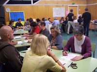
Un moment de les sessions de formació
Cada any al desembre, com a felicitació d’any nou, els nens i les nenes de l’escola regalen als seus pares un calendari il·lustrat amb l’autoretrat de tots els companys i companyes de la classe. Vam demanar al Servei Educatiu que ens ajudessin a mirar amb “ulls artístics” els retrats i els autoretrats de Picasso per a poder ensenyar a l’alumnat a expressar plàsticament l’autoretrat que, en definitiva, és una manera d’aprendre a conèixer-se.
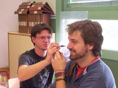
En la sessió de formació dels professors de l’Escola Illa, vam mirar-nos i dibuixar-nos
Hem tingut quatre sessions a l’escola, una inicial per contextualitzar artística i socialment els retrats al llarg de la història i tres tallers (amb el suport del personal del Servei Educatiu del museu, les educadores d’Àgora Serveis Culturals i de professorat de l’Escola d’Art Illa). Les sessions aportaven un marc i alhora permetien el treball experimental. Es va treballar en la realització de retrats a partir de diferents tècniques però, sobre tot, posant en valor la mirada sobre nosaltres i les pròpies emocions i el reconeixement de l’altre: els i les mestres del Pere Vila “ens vam mirar”.
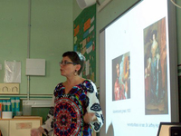
Sessió sobre el retrat en la Història de l’Art, a càrrec de personal del Servei Educatiu del Museu Picasso
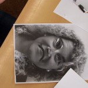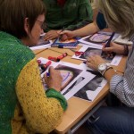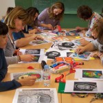
Treball sobre el retrat amb les educadores d’Àgora Serveis Culturals
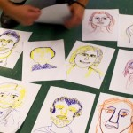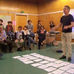
Amb els professors de l’Escola Illa vam parlar sobre els retrats realitzats
Els últims dies de desembre vam recollir, un any més, els autoretrats que s’han fet els nens i les nenes pel calendari. El primer impacte és que els nassos, les boques, les mirades s’han diversificat i enriquit i, molt curiós, molts més alumnes s’han dibuixat amb les ulleres. Podem dir, de moment, que hem començat a fer retrats “amb cara i ulls” i ulleres!
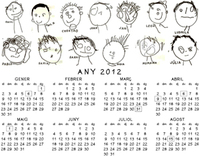
-Calendari 2012 dels alumnes de P3A de l’Escola Pere Vila. Per descarregar-te’l, clica aquí
-Calendari 2012 de l’Escola Pere Vila. Per descarregar-te’l, clica aquí
Isabel Nadal
Directora, Escola Pere Vila
La meva experiència a Califòrnia després del Postgrau de Gestió Museística
Thu, 22 Dec 2011 13:34:18 +0000
Després de finalitzar el Postgrau de Gestió Museística: Com es fa funcionar un Museu, organitzat pel Museu Picasso de Barcelona i l’IDEC-UPF, vaig realitzar les pràctiques de postgrau dins el mateix Museu Picasso. Durant els quatre mesos que hi vaig ser el meu treball es va centrar en l’estudi de l’entorn del museu dins dels [...]
Després de finalitzar el Postgrau de Gestió Museística: Com es fa funcionar un Museu, organitzat pel Museu Picasso de Barcelona i l’IDEC-UPF, vaig realitzar les pràctiques de postgrau dins el mateix Museu Picasso. Durant els quatre mesos que hi vaig ser el meu treball es va centrar en l’estudi de l’entorn del museu dins dels barris que l’envolten, en el context de Ciutat Vella, un districte amb una forta càrrega històrica que condiciona l’actualitat cultural. Aquesta cerca d’informació respon a la preocupació del museu per desenvolupar una línia estratègica que contempla polítiques de proximitat i que vol treballar amb la comunitat que l’envolta.
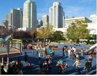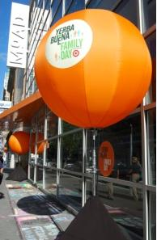
Yerbabuena Family Day: Children’s Creativity Museum, MOAD
Dins aquest apartat destaca la tasca que s’està duent a terme al MAH: Museum of Art & History in Santa Cruz, a Califòrnia. La seva recent nomenada directora, Nina Simon, està posant en pràctica les teories sobre el museu participatiu que exposa en el seu llibre The Participatory Museum. Els alumnes de la passada edició del Postgrau de Gestió Museística vàrem tenir l’ocasió de conèixer les seves reflexions de manera directa en el taller sobre activitats participatives que vam fer amb ella a l’IDEC, i també amb la conferència que va donar al Museu Picasso de Barcelona el novembre de 2010.
En assabentar-me pel Postgrau que el MAH oferia internships, vaig fer la sol·licitud i, un cop acceptada la meva candidatura per als mesos de novembre i desembre, vaig decidir anar a Califòrnia unes setmanes abans per tal de visitar els museus de San Francisco. Només un apunt al respecte: destacar l’acció del passat 15 d’octubre al barri de Yerbabuena, on es concentren museus com The Children’s creativity museum, el MOAD i el SFMOMA.
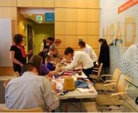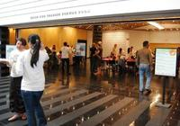
Yerbabuena Family Day: MOAD, SFMOMA
Més allunyat d’aquest centre es troba The Exploratorium (museu de ciència, art i percepció humana), una nau industrial gegant plena d’aparells interactius, imprescindible de visitar, i més el proper 2013, en què inaugurarà un nou espai.
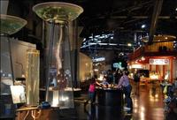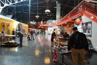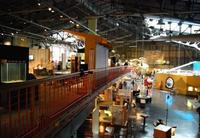
The Exploratorium
Finalment vaig arribar al MAH a finals d’octubre i de seguida em vaig incorporar al museu posant-me al dia de les activitats programades i veient quines són les tasques que podria desenvolupar-hi.
L’staff del museu és reduït, 6 persones més alguns interns com jo i, això sí, uns 130 voluntaris que ajuden en el que cal (tenint en compte les dimensions de la ciutat i del museu són moltíssims), realment fan una feina extraordinària (el tema del voluntariat als EUA mereix un post a part!).
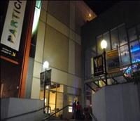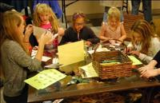
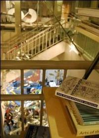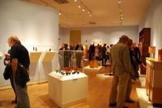
Santa Cruz MAH
En ser un museu petit i amb poc personal, tothom col·labora en tot. Hi ha una curator per Art i una altra per Història i, juntament amb la directora, la Nina Simon, i una col·laboradora interna es planifiquen aquestes activitats. Les reunions són d’allò més interessant: tot el que s’hi parla es focalitza en l’interès del visitant, en com aquest pot participar, què és el que vol veure i què podrà fer dins el museu. Aquí el concepte del museu participatiu està claríssim; no es planifica absolutament res sense tenir en compte aquest fet.
Vaig començar col·laborant en el disseny d’activitats relacionades amb les futures exposicions (projecció d’activitats participatives, renders de les propostes, cerca de materials, etc.), i també en altres projectes que van des de la remodelació d’espais “poc participatius” al disseny gràfic d’alguns displays o el desenvolupament de tallers de manualitats per al públic.
L’experiència val la pena i sens dubte és molt enriquidora a nivell professional. El discurs de fons està molt ben après per tot el personal que hi treballa i això es reflecteix en una manera de fer molt coherent que engloba tots els departaments del museu.
Són només set mesos que la directora porta al capdavant del MAH, però en aquest breu temps s’han fet grans canvis, començant per solucionar el forat econòmic i continuant per l’increment de visitants al museu.
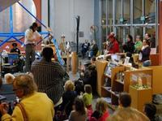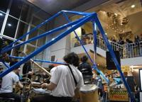
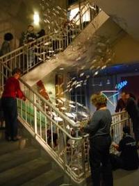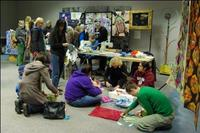
3rd Friday al MAH: Radical Craft Nigth 18 nov
No hi ha dubte que el MAH de Santa Cruz és un exemple de museu de i per a la comunitat i no només un lloc on s’ensenyen coses velles/belles. Un exemple clar n’és la seva programació, sobretot amb el First Free Friday i el 3rd Friday de cada mes. Un dels esdeveniments més interessants que he vist en un museu és la Radical Craft Night del passat divendres 18. Tota una experiència, sens dubte.
Per a més informació podeu visitar el web del MAH, el seu Facebook o el de The MAH Collective. Podreu trobar més fotos al meu Flickr.
Una salutació des de Califòrnia, terra de bons vins i bons museus.
Esther Giberga
Ex-alumna del Postgrau de Gestió Museística
Actualment en pràctiques al MAH, Califòrnia
De prínceps i herois al Club de Lectura
Tue, 07 Feb 2012 17:28:41 +0000
La conversa sobre “Los príncipes valientes”, la novel·la autobiogràfica de Javier Pérez Andújar, en què parla de la relació de Santa Adrià del Besós amb Barcelona, del riu com a frontera vital, de com bastim la nostra imaginació de lectures i de mites culturals de caire molt divers, va estar marcada per una calidesa que [...]
La conversa sobre “Los príncipes valientes”, la novel·la autobiogràfica de Javier Pérez Andújar, en què parla de la relació de Santa Adrià del Besós amb Barcelona, del riu com a frontera vital, de com bastim la nostra imaginació de lectures i de mites culturals de caire molt divers, va estar marcada per una calidesa que contrastava amb l’intens fred de l’exterior.

“Cada río tiene un escritor”, expressà l’autor, que recorda com “cruzábamos el río para buscar cultura, como esos héreos del TBO que dan título al libro y que cruzaban la frontera y volvían para fundar el clan”. Però la cultura, defensa, existia tant en aquella Barcelona alhora distant i propera, com en l’allau d’informació que entrava per televisió, amb les telenovel·les de Colombo i Kojak, o en la transmissió oral de les històries i experiències familiars.
Així, durant una hora i mitja, el text va ser un pretext per parlar amb Pérez Andújar del nostre imaginari personal, de Poe, de Baudelaire i de la gran tradició literària que ha fet de la ciutat moderna el seu tema d’exploració o de la televisió als anys 70. “Paseos con mi madre”, el nou llibre de Pérez Andújar, que completa l’anterior, també va formar part d’aquesta conversa informal sobre literatura, vida i art.
Per a la propera sessió, en canvi, tenim un assaig més aviat acadèmic, “De cómo Nueva York robó a París la idea de arte moderno”, de Serge Guilbaut, que presentarà Valentín Roma, autor del recent llibre “Rostros”.
Jordi Carrión
Preguntes:
Una de les assistents habituals al Club de Lectura ens va enviar una pregunta per correu electrònic ja que no podia assistir: “El título de Los príncipes valientes es muy hermoso. ¿Cómo surgió?”
Com va indicar durant la sessió, el títol prové d’una historieta del TBO, “El príncipe valiente”, que va adoptar.
Javier, ens vàrem oblidar de fer-te una altra pregunta rebuda per correu electrònic: “Voldria comentar que m’ha agradat molt el llibre entre moltes altres coses perquè quan l’autor escriu sobre el seu barri, per exemple, està prenent partit (ser d’esquerres), però no ho utilitza de manera política ni dramàtica, sinó senzillament en fa ús per escriure poesia i fer literatura”.
Making of “Picasso, 1936. Empremtes d’una exposició”
Tue, 24 Jan 2012 18:47:41 +0000
El muntatge de l’exposició “Picasso, 1936. Empremtes d’una exposició” va suposar un repte molt particular. Plantejàvem, des d’un museu d’art, una mostra sense obra original de cap tipus: en les pròpies paraules de la comissària de la mostra, Sílvia Domènech, el que es volia mostrar era una exposició de documents no amb documents, per tal [...]
El muntatge de l’exposició “Picasso, 1936. Empremtes d’una exposició” va suposar un repte molt particular. Plantejàvem, des d’un museu d’art, una mostra sense obra original de cap tipus: en les pròpies paraules de la comissària de la mostra, Sílvia Domènech, el que es volia mostrar era una exposició de documents no amb documents, per tal de conceptualitzar la significació de l’”Exposició Picasso” l’any 1936 a Barcelona, Madrid i Bilbao a partir de l’anàlisi dels arxius.
Entrevista a Sílvia Domènech, comissària de l’exposició
A partir d’aquesta premissa es va decidir fer servir l’arxiu com a element principal i vinculant, i així poder explicar d’una forma més completa i precisa tant la pròpia exposició de l’any 36 com la xarxa social que es va formar per poder-la realitzar. Es va considerar interessant oferir al visitant la possibilitat d’interactuar de forma directa amb els continguts dels documents, és a dir, d’entrar a l’arxiu, i es pensá que utilitzar eines tecnològiques per fer-ho era l’opció més adient.
La feina va ser un work in progress entre l’equip del museu i l’equip de dissenyadors i programadors. Una feina experimental basada en un discurs expositiu diferent a l’habitual. Per tant, aquestes particularitats van provocar que el making of de l’exposició fos poc convencional. La paraula que definiria perfectament la feina realitzada durant els vuit dies de muntatge és “artesanal”, ja que tota l’exposició està elaborada a partir d’objectes i de programació específica al servei de la tesi de la comissària.

Pantalla tàctil de l’exposició
Per tal d’explicar el discurs de l’arxiu es va crear la sala del mapping. Prenent com a base la correspondència de l’ADLAN (Amics de les Arts Noves, grup organitzador de la mostra), es va voler mostrar la gènesi dels documents i les seves relacions.
Els dissenyadors de la mostra van plantejar a la comissària que estructurés la informació a partir de deu conceptes clau que es veurien materialitzats en deu targetes que, en ser introduïdes en una taula especialment dissenyada per a l’exposició, generessin projeccions d’un contingut específic a la paret del mapping (format per còpies de cartes, retalls de premsa, fotografies i material gràfic de l’època) que permetessin conèixer els fets en relació amb l’exposició, entendre la importància de la xarxa d’intel·lectuals que hi intervingueren i alhora permetre al visitant interactuar amb la informació.
Aquest va ser un procés complicat i molt interessant. Una de les discussions plantejades era el tema de la durada de les projeccions. El coneixement de la comissària sobre el tema era evidentment molt extens i s’havia de fer un esforç per resumir la informació. En un principi es va plantejar la possibilitat de recollir quinze conceptes, però finalment entre els dos equips es decidí que la millor opció era reduir el número de targetes per tal que l’experiència fos més àgil. Aquest exemple és molt representatiu ja que demostra la col·laboració constant entre els dos equips.

Targetes que generen projeccions
Un altre element que es va construir mitjançant la feina d’ambdós equips va ser l’ontologia (formalització explícita d’un esquema conceptual compartit). L’objectiu d’aquesta ontologia era el d’entendre en profunditat la relació de Picasso amb els diferents agents que van intervenir en la realització de l’exposició, i les relacions entre ells.
El procés constà de dues parts, la primera es basà en la feina d’uns dels programadors amb la comissària. S’establiren els agents, les categories i el tipus de relacions que funcionarien com a base de l’ontologia. A continuació l’equip del museu començà a introduir tota la informació a partir d’una base de dades a la qual teníem accés on line. Més endavant es plantejà de quina manera es podria visualitzar aquesta base de dades i alhora es creà una aplicació específica de software per a visualitzar la ontologia de forma dinàmica. Es van fabricar dues taules metàl·liques que, mitjançant la utilització de pantalles tàctils, permeten a l’usuari navegar de forma directa pels diferents temes de l’ontologia. Per tal d’estructurar i acotar la informació de l’ontologia, es decidí crear diferents grups conceptuals que facilitéssin la navegació. La creació d’aquests grups va ser gradual: la comissària proposava un tipus de grup i relació i el programador ho gestionava, però no es podia confirmar que aquella relació seria definitiva fins que es veiés el resultat. D’aquesta forma es decidien tots els canvis, d’un a un i de forma conjunta entre tots els integrants de l’exposició.

Comissària i visitants a l’exposició
Per tant, aquest making of ha estat molt peculiar i s’ha basat en una feina conjunta que ha permès que un equip interdisciplinar treballés per tal de poder entrar dins d’un arxiu amb ajuda de la tecnologia.
Mariona Tió
Coordinació “Picasso, 1936. Empremptes d’una exposició”
Enllaços relacionats
Parlarem de l’arxiu a la taula rodona “Documents, arxius i processos artístics” el dijous 26 de gener a les 19:30h. Si vols saber més de com l’arxiu narra històries, no t’ho perdis!
Entrevista amb Sílvia Domènech, comissària de l’exposició
Els terrats de la Barcelona de Picasso
Mon, 16 Jan 2012 17:57:08 +0000
Us fem arribar uns extractes de l’article de Francesc Pujols, Els terrats de Barcelona, publicat a “La Publicidad” el 18 de juny de 1920. Malgrat no ser escrit durant els mateixos anys en què Picasso va viure a Barcelona i va pintar diverses obres amb els terrats de la ciutat com a tema, el text [...]
Us fem arribar uns extractes de l’article de Francesc Pujols, Els terrats de Barcelona, publicat a “La Publicidad” el 18 de juny de 1920. Malgrat no ser escrit durant els mateixos anys en què Picasso va viure a Barcelona i va pintar diverses obres amb els terrats de la ciutat com a tema, el text sembla descriure algunes de les obres de la nostra col·lecció. Agraïm al poeta Enric Casasses la referència, que li va venir a la memòria en una passejada per les sales del museu.
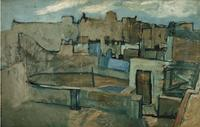
Terrats de Barcelona. Pablo Picasso, 1903
“[…] L’arquitectura catalana, traient la teulada i deixant el que en diem la solera, perquè hi bat el sol, va fer el terrat, que sense dir cap mentida és l’orgull de Barcelona, que el porta al front de les cases com una corona d’or i de plata i amb les estrelles, de diamants, i fa la ciutat plana com la mà i els barcelonins i els que venen a Barcelona, pujant al terrat s’hi poden estar i passejar amunt i avall contemplant i admirant aquell seguit de terrats l’un al costat de l’altre, que són com una plana que va del mar a la muntanya, plens de roba estesa al sol, que voleia com les banderes dels barcos del port, com si fos la cabellera de les cases i que és una plana que lliga i ve com l’anell al dit, amb el cel, les muntanyes i el mar que ens volten i ens guarden. […]
Ha vingut un dia que influïts i portats com tothom pel vent del Nord d’Europa, que tot s’ho emporta, s’han llançat a tornar a posar teulades a les cases, amb l’agravant, que no els podem perdonar mai, de que en comptes de tornar-se a posar les taulades de teules de terra roja fetes al foc […] hi posen teules de llicorella, negres com el sutge o grises com un dia de pluja […]
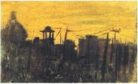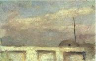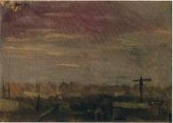
Paisatge urbà (1896), Barana de terrat i dipòsit d’aigua (1895-96), Paisatge urbà (1896). Pablo Picasso
I com si davant d’aquesta desgràcia que fa malbé les cases i que confiem que no durarà gaire, perquè és d’esperar que els arquitectes joves que ara pugen obriran els ulls un dia o altre, els mateixos desgraciats que la fan, coneguessin que robar el terrat, és robar el millor tresor de les cases de Barcelona, que se l’estimen més que tot, perquè els hi sembla que toca el cel […] Els arquitectes d’ara que s’han deixat enganyar pel Nord d’Europa, amaguen i dissimulen el terrat, posant-lo al capdamunt de tot de les teulades negres que fan, perquè els veïns hi puguin estendre la roba i hi puguin pujar sempre que vulguin, per tocar el cel amb les dents i veure el mar i les muntanyes del voltant de Barcelona. […]
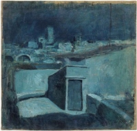
Terrats de Barcelona. Pablo Picasso, 1902
I per això podem acabar dient, que si la moda d’amagar la teulada darrera la barana del terrat va passar i va venir la joia que avui tenim, demanem que passi, com més aviat millor, la moda d’amagar el terrat, dissimulant-lo a dalt de la teulada, com si fos una cosa que no es pot ensenyar, i així Barcelona no perdrà un dels pocs encisos que té i que tothom li enveja, perquè si als països del Nord no hi plogués tant com hi plou, estem segurs que ens el copiarien.”
Francesc Pujols, Els terrats de Barcelona, “La Publicidad”, 18 de juny de 1920 [reproduït de Francesc Pujols, Articles, selecció i edició d’Enric Cassany, Quaderns Crema, Barcelona 1983]
Redacció del museu
El 2011 del Museu Picasso en imatges
Fri, 30 Dec 2011 11:03:48 +0000
La tria de les imatges més representatives d’aquest any que ja s’acaba no ha estat una feina gens fàcil. Entre tot l’equip hem fet un munt de projectes! Exposicions, activitats, recerca i restauració, educació, registre, biblioteca, publicacions, comunicació, administració, gestió de públics… la llista és llarga. Aquí us deixem un petit tast del que ha [...]
La tria de les imatges més representatives d’aquest any que ja s’acaba no ha estat una feina gens fàcil. Entre tot l’equip hem fet un munt de projectes! Exposicions, activitats, recerca i restauració, educació, registre, biblioteca, publicacions, comunicació, administració, gestió de públics… la llista és llarga. Aquí us deixem un petit tast del que ha estat la feina del museu durant el 2011.
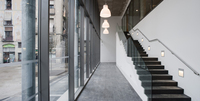
Inauguració del Centre de Coneixement i Recerca situat a la Plaça Sabartés. El nou edifici s’ha construït amb la idea que esdevingui un espai de referència local i internacional en l’estudi i la recerca de Picasso i el seu context artístic i social. Foto: Josep M Llobet
La segona edició del Big Draw. La festa del dibuix ha tingut molt d’èxit gràcies a tots els participants, talleristes, artistes, monitors i equips dels centres. Big thanks! Foto: Nuria Fradera
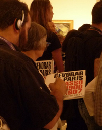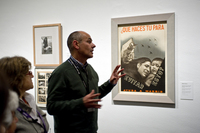
Visitants a l’exposició de “Devorar París. Picasso 1900-1907” que ha mostrat l’evolució de l’artista des que va arribar el 1900 a París fins als anys 1907-1908, en què va assolir la condició de capdavanter de l’avantguarda de la capital francesa. Foto: Jordi Mota
“Vinyetes al Front” explicada pels seus comissaris. Exposició que s’ha vertebrat a partir dos gravats que componen l’obra Somni i Mentida de Franco. Foto: Jordi Mota
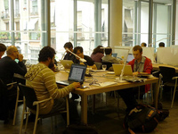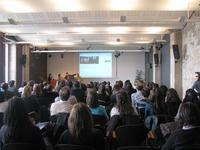
Participants durant la Hackathon d’Europeana celebrada al Museu Picasso. Hackers multiculturals amb moltes idees i projectes per programar. Foto: Conxa Rodà
Primera trobada entre els museus catalans i representants de l’Amical Viquipèdia per posar en comú informació de qualitat i bones pràctiques de col·laboració.
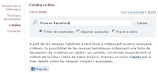
El catàleg de la biblioteca del museu ja és consultable online! I la informació bibliogràfica cercada es pot descarregar fàcilment.
 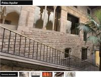
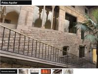
Elaboració de continguts per a dispositius mòbils d’obres destacades de la col·lecció i una visita virtual als patis del museu, així com una audioguia en 8 idiomes.
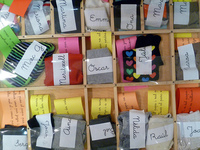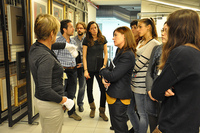
Participació en el projecte pilot REFLEXIONART: Tutories d’Art, amb l’objectiu principal d’unir institucions culturals de la ciutat i centres educatius en una reflexió sobre un tema comú. Presentació dels treballs dels alumnes a les sales del museu.
Segona edició del Postgrau en Gestió museística: com es fa funcionar un museu amb col·laboració amb l’IDEC de la Universitat Pompeu Fabra.
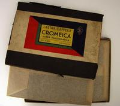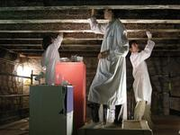
Incorporació al museu del Fons de la Sala Esteva que ha permès crear la recent inaugurada exposició “Picasso 1936. Empremtes d’una exposició”.
Presentació del procés de restauració del conjunt de paper imprès i policromat cinccentista recuperat al Palau Aguilar. Una bona trobada professional.
L’equip el museu us desitja un Bon Any 2012!
Redacció del museu
Enllaços relacionats
Museu Picasso en imatges 2010
Museu Picasso en imatges 2009
Jornada de treball sobre paper pintat al Museu Picasso
Mon, 19 Dec 2011 15:27:03 +0000
La presentació, el passat 12 de desembre, del procés de restauració del conjunt de paper imprès i policromat cinccentista recuperat el 2010 al Palau Aguilar, va ser una ocasió perfecta de trobada professional.
Va obrir la jornada el director, Pepe Serra, recordant la importància de l’aportació de coneixement tècnic (materials, procés creatiu, etc.) tant pel que [...]
La presentació, el passat 12 de desembre, del procés de restauració del conjunt de paper imprès i policromat cinccentista recuperat el 2010 al Palau Aguilar, va ser una ocasió perfecta de trobada professional.
Va obrir la jornada el director, Pepe Serra, recordant la importància de l’aportació de coneixement tècnic (materials, procés creatiu, etc.) tant pel que fa a la documentació de les col·leccions com dels edificis del museu.
Restauració del sostre del Palau Aguilar
Després d’una breu introducció dels palaus i les principals modificacions històriques, el Jesús Zornoza, la Mónica Guitart i la Beatriu Montoliu restauradors de l’equip que va coordinar el departament de restauració del museu, van fer una detallada descripció del procés de restauració i els criteris de presentació aplicats.
El tema va obrir la discussió entre els assistents sobre assumptes tan diversos com els límits permesos en les intervencions, l’estabilitat de la fusta antiga com a suport o l’excel·lent qualitat del paper de draps fabricat a la Mediterrània durant el segles XV i XVI i que justificaria el bon estat de conservació del conjunt.
L’aportació científica la va fer la Sara Boularand, de la Universitat de Barcelona, qui va detallar la metodologia emprada per a la identificació de materials presents al sostre del palau.
A la taula rodona, la interrelació entre les anomenades arts menors o aplicades va ser el fil conductor per connectar diferents disciplines.
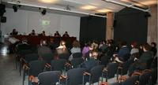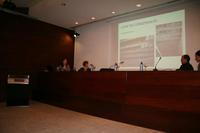
Ponents durant la jornada de paper pintat. Foto: Reyes Jiménez
Blanca Lopez de Arriba, restauradora de policromia, va fer una exposició dels sistemes de decoració dels instruments musicals procedents de Flandes al XVI i les similituds amb les manufactures de estampació del mateix període.
Elvira Gaspar, especialista en conservació de paper, va plantejar les diferències entre aquells objectes fabricats amb paper (paravents, ventalls, etc.), custodiats en col·leccions privades i en museus, així com la visió tan diferent de les intervencions patrimonials entre orient i el mon occidental.
Van tancar la taula rodona Àngels Bello i Carme Borell, de l’estudi B2, parlant del sempre polèmic mon de les exposicions temporals i els usos i abusos dels objectes sobre paper i obrint un debat sobre la possibilitat de presentació de rèpliques o documents digitalitzats en substitució d’originals.
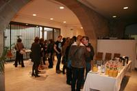
Asistents i ponents durant el descans
Per acabar la Raquel Lacuesta de la Diputació de Barcelona va aportar una interessant documentació històrica i va oferir els arxius del Servei de Patrimoni Arquitectònic Local com a base imprescindible per iniciar qualsevol intervenció relacionada amb patrimoni immoble.
Una jornada interdisciplinària que va comptar amb la participació d’institucions com l’Arxiu Històric, la Biblioteca de la Universitat de Barcelona, l’Escola Superior de Conservació i Restauració, el MNAC, el Museu de l’Estampació, entre d’altres, i de professionals de la conservació i restauració de document gràfic.
Reyes Jiménez
Conservació preventiva i Restauració